S01 · Beri agent aturan kerja tim
Ajari agent cara tim menulis kode.
Panduan praktik · GitHub Copilot
Pakai Expense Claim App untuk melihat bagaimana agent mengerjakan tugas, CI memeriksa perubahan, dan manusia memutuskan apakah hasilnya layak masuk.
Isi nilai yang ditunjukkan, klik kontrol bernomor, lalu cocokkan hasilnya. Screenshot asli dibedakan dari hasil perintah yang dirender dan layar cloud yang belum terekam.
Ajari agent cara tim menulis kode.
Delegasikan satu issue dan review hasilnya.
Turunkan aturan bisnis menjadi tes batas.
Bedakan alert, mitigasi, dan bukti scan ulang.
Lihat kontrol, audit, dan biaya.
Ikuti satu fitur melewati semua gate.
Chat cukup untuk memahami sebuah fungsi. Agent cocok untuk tugas yang punya kriteria, beberapa file, dan hasil yang bisa dites. Workflow terjadwal menambah biaya dan risiko; pilih kerja otomatis hanya jika pemicu dan hasil yang diizinkan jelas.

flowchart LR
completion["Completion"] -->|Jelaskan| chat["Chat"]
chat -->|Delegasikan| agent["Coding agent"]
agent -->|Hubungkan| lifecycle["Agentic SDLC"]
classDef agent fill:#efe6ff,stroke:#7354a4,color:#382459
class agent,lifecycle agent
flowchart TB
plan["Plan · S11"] -->|Setujui rancangan| build["Build · S02, S04"]
build -->|Jalankan cek| test["Test · S05, S08"]
test -->|Buka bukti| review["Review · S09"]
review -->|Periksa temuan| security["Security · S10, S14"]
security -->|Manusia putuskan rilis| deploy["Deploy · S15"]
deploy -->|Pantau perubahan| operate["Operate · S12, S13"]
operate -.->|Masukkan pembelajaran| plan
classDef gate fill:#fff2dc,stroke:#955b17,color:#5b3711
class review,security,deploy gate| Kategori | Otonomi (skala 1–5) | Kebutuhan kontrol (1–5) |
|---|---|---|
| Inner loop | 1 | 1 |
| Delegasi asinkron | 2 | 3 |
| Tim virtual | 3 | 4 |
| Continuous AI | 4 | 5 |
| Governance dan capstone | 5 | 5 |
Ikuti satu klaim dari browser ke SQLite · Cari skenario · Pelajari istilah dan FAQ.